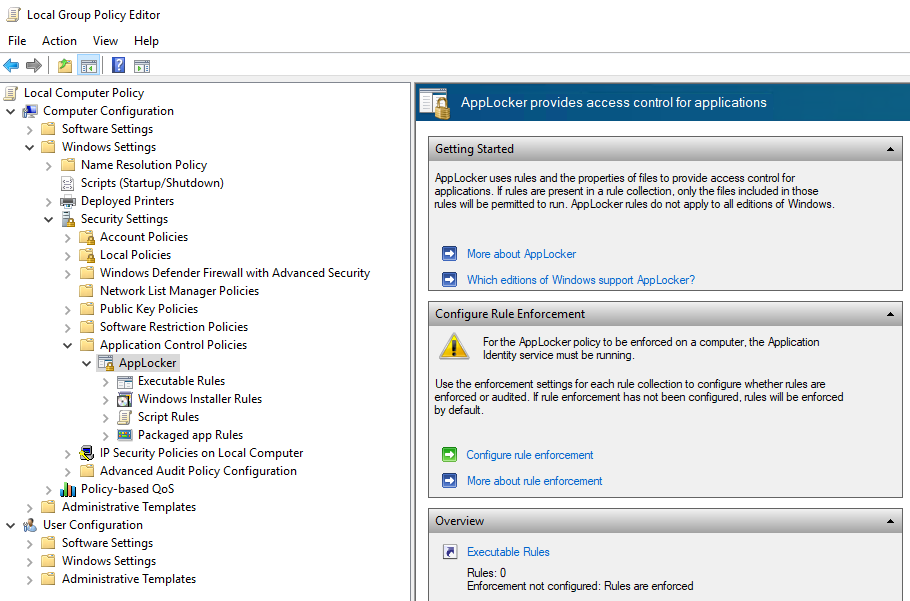

Known Issues
Secret Issue When Loading via Kustomize
kubectl apply -k <folder>
error: rawResources failed to read Resources: Load from path ../secrets failed: '../secrets' must be a file (got d='..\kubernetes\secrets')
=> kubectl might be outdated, please us a newer version.
Disk Pressure
You may suddenly find that Kubernetes cannot start a large number of Pods. This is often due to Disk Pressure meaning that you are lacking available space on your hard disk.
For diagnostics, either inspect the K2s System Status or use kubectl directly:
Additionally, on Linux, you can run:
Be aware that the disk pressure may occur on your physical Windows system as well as inside the Linux VM.
If you have a large number of Pods stopped than the problem is probably on the Linux side since most of the containers run there.
If the problem is on your local Windows system, use the standard tools to win space on the drives, (e.g. TreeSize utility on C\ and D:\).
You need a least 10 GB free on both disks.
If the problem is on your Linux VM, you need following commands to find and fix the problem (get an overview of the disk space consumption):
k2s node connect -i 172.19.1.100 -u remoteto open a shell on the Linux machinedfand look at /dev/sda1 percentage
Then go to the very top directory with cd ../.. and with sudo du -d1 -x -h you can look in each directory and subdirectory to localize the high space consumption.
You may have too many data in your couch data and can remove them under /mnt/<folder> with sudo rm -r -d shards/.
The problem comes most probably from the Docker registry and you can clean it up with docker system prune or crictl rmi --prune if you do not have Docker installed.
Warning
If you are currently using some locally built containers, Kubernetes will not be able to reload them automatically.
You must rebuild them locally on your system with the k2s image build command.
Volume Access Problem
TP remove unbound volumes, run:
Then re-apply the volumes:
Then re-apply the manifest of the service consuming the volumes:
No cbr0 Switch Being Created During Start
When starting K2s, you run into an error (e.g. timeout) while the script is waiting for the cbr0 switch to be created by flannel:
[10:19:22] waiting for cbr0 switch to be created by flanneld...
Be prepared for several seconds of disconnected network!
[10:19:25] State of services (checkpoint 1): All running
No cbr0 switch created so far...
[10:19:27] State of services (checkpoint 2): All running
PID for flanneld service: 20256
No cbr0 switch created so far...
[10:19:29] State of services (checkpoint 3): All running
No cbr0 switch created so far...
[10:19:31] State of services (checkpoint 4): All running
No cbr0 switch created so far...
[10:19:33] State of services (checkpoint 5): All running
PID for flanneld service: 5260 (restarted after failure)
No cbr0 switch created so far...
[10:19:35] State of services (checkpoint 6): All running
PID for flanneld service: 14488 (restarted after failure)
No cbr0 switch created so far...
[10:19:37] State of services (checkpoint 7): All running
PID for flanneld service: 2236 (restarted after failure)
No cbr0 switch created so far...
There are several reasons which can cause this. Basically the flanneld process is waiting for a new virtual switch to be created which has the same IP as the original, physical ethernet adapter.
Networking Problems
If you face network errors especially between Linux and Microsoft services, you may need to reset your networking.
Minor Workaround
- Run
k2s stop - Run
ipconfig - Run:
- Run
ipconfigto check cleanup result - Run
k2s start
Major Workaround
Warning
This workaround resets the networking on Windows.
- Run
netcfg -d - Reboot the host system
Microsoft APIPA / Link-Local Address
Another reason could be the Windows Automatic Private IP Addressing (APIPA). It is enabled by default in Windows 10 and depending on the speed of the physical adapter, the CPU and the DHCP server, it may happen that Windows decides to use an "automatic APIPA address".
There is a reserved IPv4 address block 169.254.0.0/16 (169.254.0.0 – 169.254.255.255) for link-local addressing. If such an address is chosen by Microsoft, it will no longer be overwritten by the DHCP server (depending on OS version). This will make the flanneld approach unusable. Such APIPA addresses are detected during the K2s start routine. A workaround is also provided the script FixAutoconfiguration.ps1.

Bug
After applying this fix, the APIPA system is completely disabled on the machine. Nevertheless, Microsoft does not indicate that properly when you issue the ipconfig /all command. You will still see lines that state Autoconfiguration Enabled . . . . : Yes but that is not true. Don't believe it, it's just a bug in the output. Autoconfiguration is really disabled.
More information on this topic:
Unable to Mount File Share Between Nodes
Problem
Mounting errors like the following occurred:
Solution
Respective user must have local permissions to use file shares in order to host/mount SMB shares.
k2s.exe Missing / k2s Command Not Found
Problem
If the k2s.exe is missing in the install folder, most likely the Windows Virus & thread protection identified it as a thread and moved it to quarantine. Despite all exclusion lists this file was added to by the K2s maintainers, this can happen from time to time.
Solution
- If the Windows Virus & thread protection asks for the appropriate action, allow the
k2s.exefile on your system. - To restore the file, go to
Windows Virus & thread protection->Protection historyand restorek2s.exe. The result should look similar to this:
Unable to Run Windows Container on a Hardened Machine (AppLocker Rules)
Problem
If the K2s cluster is installed on a machine where security hardening is applied using AppLocker rules, then running Windows containers normally will be blocked. If you describe the Windows container Pod then you might see the following error, where the application is blocked by group policy:
Warning FailedCreatePodSandBox 0s kubelet Failed to create pod sandbox: rpc error: code = Unknown desc = failed to start sandbox container task "459fe28ca0da5a154964c80e1b5d74de3abefc83cf7ad77418a5d6cd9a7e5605": hcs::System::CreateProcess 459fe28ca0da5a154964c80e1b5d74de3abefc83cf7ad77418a5d6cd9a7e5605: This program is blocked by group policy. For more information, contact your system administrator.: unknown
You can check the existing AppLocker rules by opening Local Group Policy Editor by running gpedit.msc. You can find the rules as shown below:

If Applocker is activated within K2s usage, the the rule need to be added manually:
$appLockerRules = '.\cfg\applocker\applockerrules.xml'
Set-AppLockerPolicy -XmlPolicy $appLockerRules -Merge
By this, windows containers will not be blocked by Applocker.
Solution
Warning
This is not an ideal solution, rather a workaround.
Change registry setting under Computer\HKEY_LOCAL_MACHINE\SOFTWARE\Policies\Microsoft\Windows\SrpV2\EXE, AllowsWindows - 1, EnforcementMode - 1 (both are decimals). Next, we should disable the rules in AppLocker and restart the machine.
Although, this is just a hack to continue working, we should allow Windows containers execution specifically CMD.exe in a secured way.
Warning
Please review the AppLocker rules with your security experts.
Unable to Run Windows Hyper-V on Host Machine
Problem
Hyper-V Manager unable to connect to Virtual Machine Management service on host machine. To reproduce, run:
If there is no error, the command should return a list of VMs (or an empty list).If an error occurs, it might look like:
Hyper-V encountered an error trying to access an object on computer ‘localhost’ because the object was not found. The object might have been deleted. Verify that the Virtual Machine Management service on the computer is running. If the service is running, try to perform the task again by using Run as Administrator.
Solution
This is due to a prior uninstall which has deleted a MOF file which is required for HyperVisor. In order to regenerate this file, run the following command from an elevated (administrator) command prompt:
Unable to Run Windows Containers on Host Machine
Problem
Windows containers are unable to run due to failure in hcs::CreateComputeSystem:
Failed to create pod sandbox: rpc error: code = Unknown desc = failed to create containerd task: failed to create shim task: hcs::CreateComputeSystem 9f078e725c4f6b36dc2647d6323bc214da46fa24ba88d3d5652bc687993c27ed: The request is not supported.: unknown
Error response from daemon: hcsshim::CreateComputeSystem 70b6cf806eef813a8a93b40780c32e43f5406f0cbec10b922d3bd35ecc677b6c: The request is not supported.
Solution
- Run
k2s stop - Run:
- Restart host machine
- Run:
- Restart host machine
- Run
k2s start - Re-deploy Windows containers